PandaFit
A playful training companion for university students who want to build exercise habits through small daily missions, visible progress, and motivating rewards.
Mission Brief
We are designing a human-centred web experience that turns training from a vague, easily-abandoned task into a structured and rewarding routine. Our focus is not professional coach management, but habit-building for students and beginners.
Current Focus
Discovering requirements through personas, journey mapping, academic research, and questionnaire-based evidence about student motivation and exercise barriers.
Quick Access
This section provides direct access to the poster, portfolio, demo, and presentation support materials.
Poster Link / QR
[Placeholder for poster PDF link or QR code]
Portfolio Link / QR
[Placeholder for portfolio link or QR code]
Demo Link / QR
[Placeholder for demo link or QR code]
Why This Matters
Many students want to exercise more regularly, but they face three recurring barriers: unclear starting points, weak short-term motivation, and poor visibility of progress. PandaFit explores how playful interaction design can reduce those barriers.
Clarity
Users should know what to do today without scrolling through complicated plans.
Motivation
Small wins, visible rewards, and streaks can make training feel worth continuing.
Growth
Progress should be easy to see so users feel that effort turns into achievement.
Design Direction
Our Working Principles
- Make the first step obvious.
- Use playful feedback without making the system childish.
- Break large fitness goals into short, achievable daily quests.
- Show progress in a way that feels encouraging rather than pressuring.
Target Users
Instead of designing for “everyone who exercises,” we focus on students and beginner users who want support, structure, and motivation.

Pablo Leo
Personality
Detail-oriented, energetic, tech-savvy, patient with beginner learners
Goals
- Create personalized training plans efficiently
- Track student progress and adjust plans
- Improve student engagement and consistency
Pain Points
- No unified system to manage student plans
- Time-consuming communication and follow-up
- Difficult to motivate low-discipline students
Needs
- Quick editable workout templates
- Real-time progress tracking
- Gamified features to motivate students

Rachel
Personality
Enthusiastic but easily distracted, beginner-level, social
Goals
- Learn correct exercise techniques
- Follow a clear beginner-friendly plan
- Track progress and improvements
Pain Points
- Unsure about correct posture
- No clear structured workout plan
- Lacks motivation and feedback
Needs
- Video demos with guidance
- Simple daily workout plans
- Visual progress tracking
Experience Journey
This section visualises Rachel’s fitness journey from initial motivation to long-term continuation. It highlights how confusion, anxiety, and loss of progress visibility affect behaviour, and how PandaFit can intervene with structure, guidance, rewards, and progress tracking.
Journey Map Overview
The journey map shows five stages of the beginner fitness experience: discovery, evaluation, commitment, onboarding, and long-term continuation. Across these stages, the user moves from curiosity and motivation to confusion and anxiety, before either regaining satisfaction or dropping off. This map helps us identify concrete moments where the system should reduce friction, provide guidance, and reinforce progress.

Journey map created in Miro to document Rachel’s actions, touchpoints, emotional changes, pain points, and corresponding design opportunities.
Actor & Scenario
The journey focuses on Rachel, a beginner university student who wants to exercise more regularly but struggles with uncertainty, lack of guidance, and weak long-term motivation.
Stages
The journey moves through discovery, evaluation, commitment, onboarding, and long-term continuation, showing how user expectations and barriers change over time.
Thoughts & Emotions
Rachel begins curious and motivated, becomes confused when faced with too many choices, feels hopeful again when committing, then anxious during real exercise, and only feels satisfied when she receives clear support and visible progress.
Pain Points & Opportunities
The main barriers are unclear starting points, no simple plan, uncertainty about movement, and difficulty seeing progress. These directly inform PandaFit’s use of daily quests, guided instruction, progress tracking, streaks, and rewards.
Journey Highlights
- Discovery: Users are interested in improving fitness, but need a clear and immediate starting point.
- Evaluation: Too many choices and no simple plan create confusion and slow commitment.
- Onboarding: Anxiety increases when beginners are unsure whether they are exercising correctly.
- Long-term continuation: Lack of visible progress and weak motivation create drop-off risk.
- Design implication: PandaFit should reduce decision complexity, support correct exercise learning, and reward consistency over time.
Academic Research
This section summarises five academic papers that support our project direction. Together, they provide evidence for using gamification, habit-based routines, self-monitoring, and behaviour-change techniques to improve exercise engagement and adherence.
Research Focus
- Whether gamification can meaningfully improve physical activity and engagement.
- How habits are formed through repetition in stable daily contexts.
- Why self-monitoring and visible progress are important in behaviour change.
- What barriers young adults face when trying to stay physically active.
- Which behaviour change techniques are associated with better engagement in mobile health apps.
Paper 1
Title: Evaluating the Effectiveness of Gamification on Physical Activity: Systematic Review and Meta-analysis of Randomized Controlled Trials
Main Idea: This meta-analysis found that gamified interventions have a statistically significant positive effect on physical activity, with effects that can persist beyond the intervention period.
Relevance to PandaFit: This directly supports our decision to include XP, badges, and quest-based interaction in PandaFit to improve motivation and sustained engagement.
Paper 2
Title: How Are Habits Formed: Modelling Habit Formation in the Real World
Main Idea: The study shows that repeated behaviours performed in a stable context become more automatic over time, supporting the role of small and regular actions in habit formation.
Relevance to PandaFit: This supports our design choice of short daily quests, because small repeated training actions are more likely to help users build lasting exercise habits.
Paper 3
Title: The Use of Self-Monitoring and Technology to Increase Physical Activity: A Review of the Literature
Main Idea: This review concludes that self-monitoring, especially when supported by digital technology, is frequently associated with increased physical activity and better behaviour change outcomes.
Relevance to PandaFit: This justifies including progress dashboards, streaks, and visible performance summaries as core parts of the PandaFit experience.
Paper 4
Title: Barriers and Facilitators to Physical Activity for Young Adult Women: A Systematic Review and Thematic Synthesis of Qualitative Literature
Main Idea: This review highlights that physical activity barriers in young adults are complex and include time pressure, social influences, support, confidence, and environmental constraints.
Relevance to PandaFit: These findings reinforce our need to design a low-pressure, beginner-friendly system that reduces confusion, supports continuity, and offers practical structure for regular exercise.
Paper 5
Title: Potential Associations Between Behavior Change Techniques and Engagement With Mobile Health Apps: A Systematic Review
Main Idea: This review found repeated evidence linking goal setting, self-monitoring, feedback, prompts/cues, rewards, and social support to stronger engagement in mobile health apps.
Relevance to PandaFit: This supports the combination of daily goals, feedback loops, reminders, rewards, and progress tracking in PandaFit as evidence-based strategies for maintaining user engagement.
Questionnaire Research
To better understand student exercise habits and motivational barriers, we are conducting a questionnaire targeting university students and beginner gym users. The aim is to collect evidence about workout routines, common frustrations, and attitudes towards gamified training support.
Research Purpose
The questionnaire is designed to identify why students struggle to maintain exercise habits and what kind of support they find most useful and motivating.
Participants
77 valid responses were collected, mainly from university students and beginner fitness users. Most respondents were aged 18–35, which matches the primary target audience of PandaFit.
Question Themes
The questionnaire focuses on workout frequency, barriers to consistency, motivational challenges, and user opinions on rewards, progress tracking, and playful fitness features.
Survey Findings
The questionnaire results help us identify the most common barriers in student exercise behaviour and clarify which design features could better support motivation and habit formation.
Finding 1
Most respondents exercise only 1–2 times per week, suggesting that consistent workout habits are not yet established.
Finding 2
The most common barriers are having no clear plan and difficulty tracking progress, indicating a need for structure and feedback.
Finding 3
79.22% of respondents want a training plan, and 87.01% want exercise demonstrations, showing strong demand for guided support.
Finding 4
90.91% want to track progress and 72.73% support gamification, which strongly supports the use of progress tracking and reward systems in PandaFit.
Data Visualisation
The charts below present selected questionnaire results in a more accessible visual form. These visual summaries help us identify patterns in motivation, barriers, and preferred support features among our target users.
Biggest Pain Points in Training

This chart shows that the most common training frustrations are having no clear plan (36.36%) and finding it hard to track progress (28.57%). This supports our decision to prioritise structured daily quests and visible progress features in PandaFit.
Demand for Progress Tracking

This chart shows that 90.91% of respondents want to track their progress. It suggests that progress visualisation is not optional, but a core requirement for the system. Therefore, PandaFit should include streaks, progress summaries, and level-based growth feedback.
Key Insights from Research
Based on the questionnaire results, we extracted a set of research-based insights that directly inform the design of PandaFit.
Research-Based Insights
- Users need more structure in training, especially clear daily plans and guidance.
- Progress tracking is a core requirement rather than an optional feature.
- Users strongly value exercise demonstrations, especially for safe and correct movement learning.
- Gamification is positively received and can be used to improve motivation and continuity.
Design Opportunities
Based on our personas, experience journey, and questionnaire findings, we identified several opportunities where design intervention could improve continuity, clarity, and motivation.
Opportunity 1 · Reduce Starting Friction
Instead of asking users to create a full training plan, PandaFit should immediately present one recommended “Today’s Quest” so users can begin without overthinking.
Opportunity 2 · Reward Small Wins
The system should celebrate small completions with XP, badges, and micro-feedback so users feel progress even before long-term fitness changes become visible.
Opportunity 3 · Make Progress Visible
A compact dashboard should help users see streaks, completed sessions, and milestone growth so that effort feels accumulated rather than forgotten.
Opportunity 4 · Support Correct Exercise Learning
Since many respondents want exercise demonstrations, PandaFit should include simple guidance, video-based examples, or clear task instructions to support beginners and reduce uncertainty.
Core Feature Concepts
Daily Quest
A short and clear task set that gives users an immediate starting point for the day.
Reward Loop
The pentagon-shaped attribute chart and the cute pet growth system can transform the process of completing tasks into a clear and positive form of motivation.
Progress Trail
A clear experience bar can help users gain an intuitive understanding of the long-term growth situation, rather than merely focusing on the daily achievements.
Prototype Progress
This section documents what has already been prototyped and what remains under development.
Low-Fidelity Prototype
We first translated our research findings into a simple page structure and feature map. At the low-fidelity stage, we focused on information architecture rather than visual polish. The early prototype established the main navigation and core user flow across Home, Task, Award, Grow, and Me.
Mid-/High-Fidelity Prototype
The current prototype has reached a high-fidelity stage in terms of visual design and interaction layout. We have established a consistent mobile interface style, including navigation, page hierarchy, reward presentation, and progress-related components. The design uses a light green and black visual language to communicate motivation, growth, and playful feedback.
Functional Demo Status
For the functional demonstration, several core processes have been able to be showcased.For the functional demonstration, several core processes have been able to be showcased. The "My" page includes account overview, language switching, notifications, support page, the concept of paid membership, and account settings. Some of these functions are currently interactive prototype processes rather than fully completed production functions, and the complete backend consistency is still being further refined.
Current Build Status
System Development Overview
The current build has progressed beyond the static prototype stage and now includes both frontend implementation and partial backend connectivity.
Current Build Status
The current version has surpassed the static prototype stage and incorporates some implemented systems. This system includes both the front-end interface and the backend connection functionality.
Front-end Implementation
The main user interface has been designed as a mobile-style application with multiple navigable pages. The core sections include “Home”, “Tasks”, “Rewards”, “Growth”, and “Me”, which are complete and unified in terms of visual presentation, layout, and interaction design. Users can switch between pages, view task records, interact with interface elements, and access different functional sections such as rewards, progress tracking, and personal settings. One key innovation is the idea of mascot growth, which visually reflects the user’s exercise progress.
Backend Implementation
A backend architecture has been developed to support core functions such as user accounts and task-related data. Basic API connections have been established, and the application is capable of communicating with the backend server. However, complete data persistence and synchronization between all modules are still under development.
Integrated Functions
In the current version, several key functions have been implemented and can be demonstrated. These include task display and deletion, weekly sign-in visualization, user profile information, and language switching. Some functions related to rewards and progress have also been partially integrated with backend logic.
Unfinished / Ongoing Features
Some parts of the system are still under development. Certain pages, such as support, premium membership, and detailed settings, are currently presented as interface prototypes rather than complete functional modules. Additionally, consistency between the task system, reward system, and growth tracking is still being refined. Further testing and backend integration are required to complete the full system.
Prototype Screens & Interface Mapping
Overview
This section presents the key interface screens of the PandaFit application prototype. Each screen demonstrates a specific functional module and its role within the overall system.
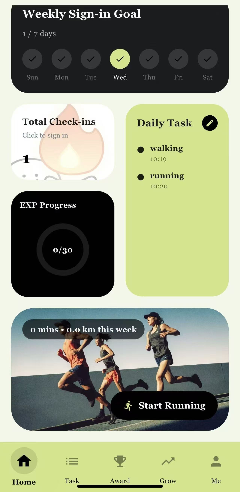
Home Screen
The Home screen provides an overview of the user's daily progress, including weekly sign-in status, total check-ins, experience progress, and quick access to tasks.
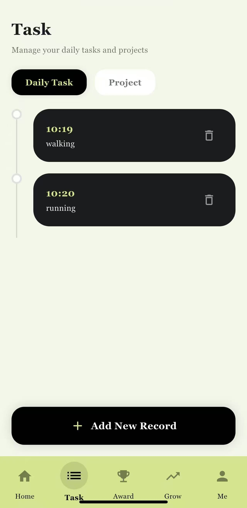
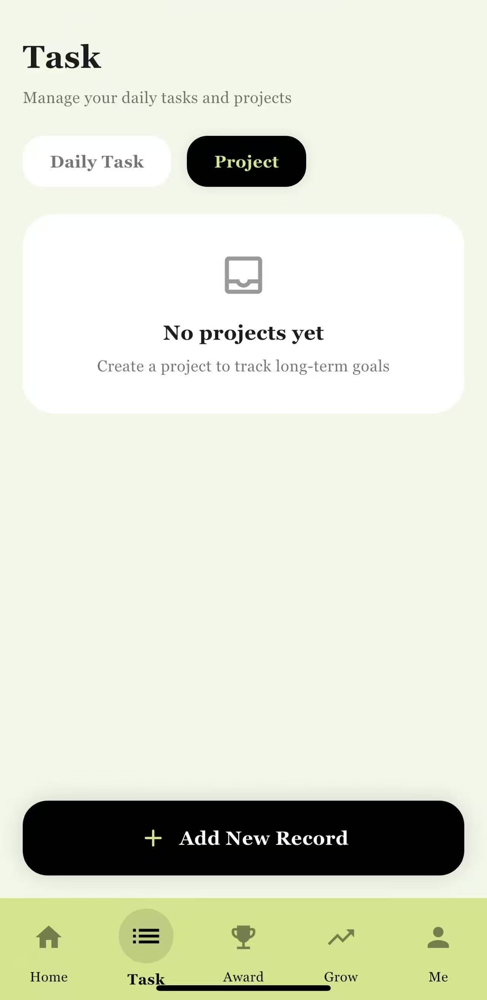
Task Management
Users can manage daily tasks and projects, including adding, viewing, and deleting records. The interface supports switching between different task categories.
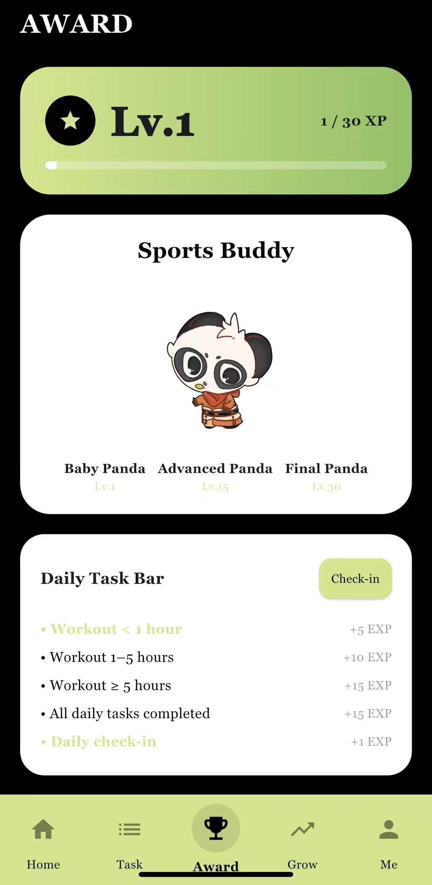
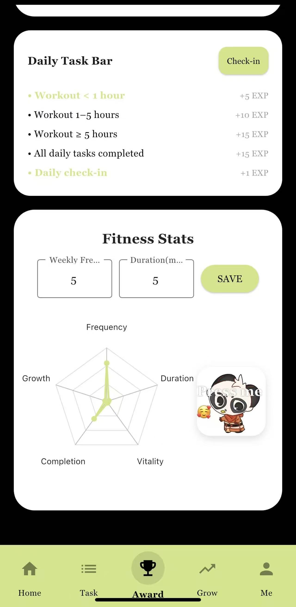
Reward System
This screen visualizes user progress through levels and experience points. The mascot evolves as users complete tasks, enhancing motivation.
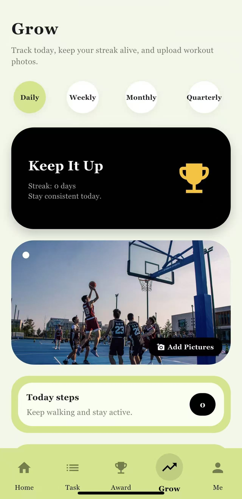
Growth Tracking
The Growth page tracks activity trends such as frequency, duration, and streaks, supported by visual charts and progress indicators.
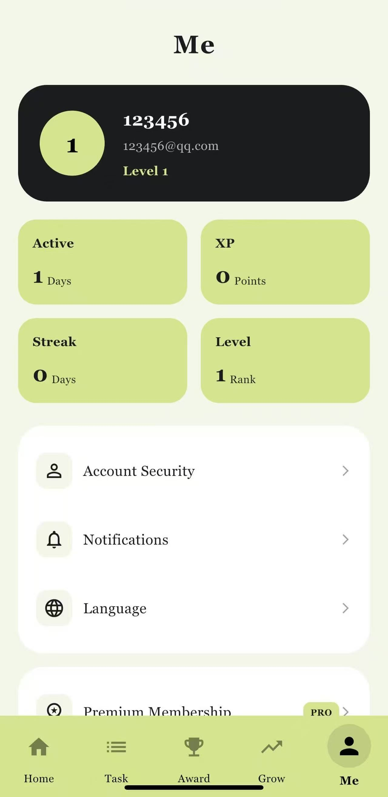
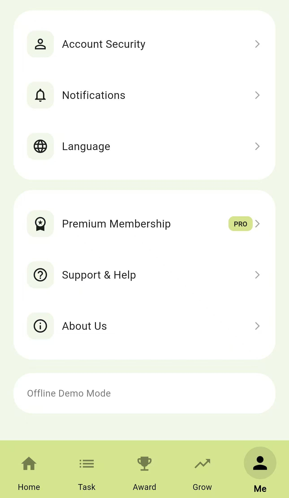
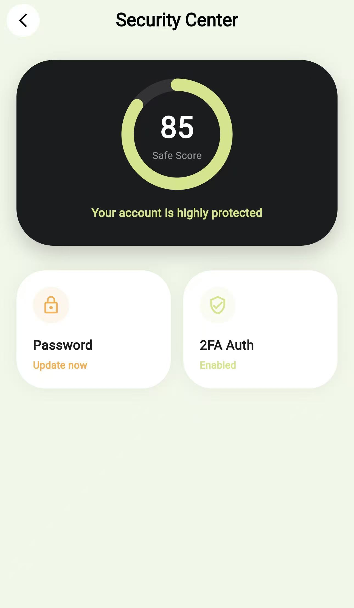
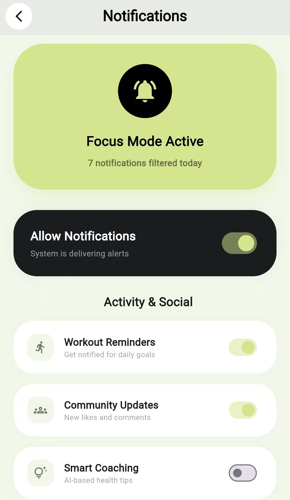
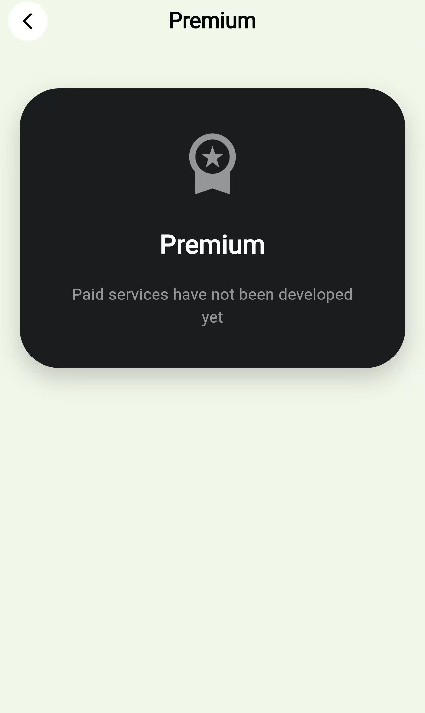
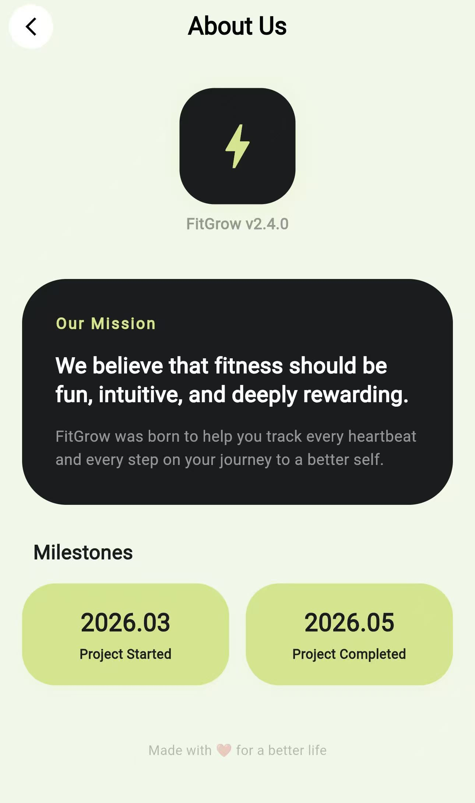
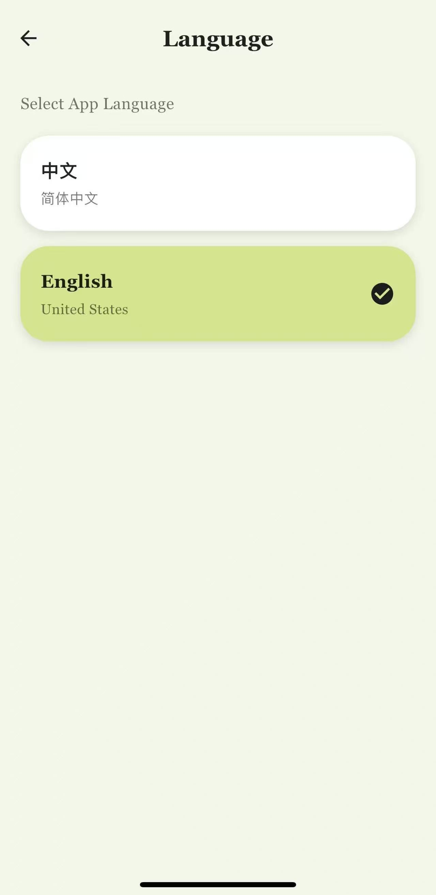
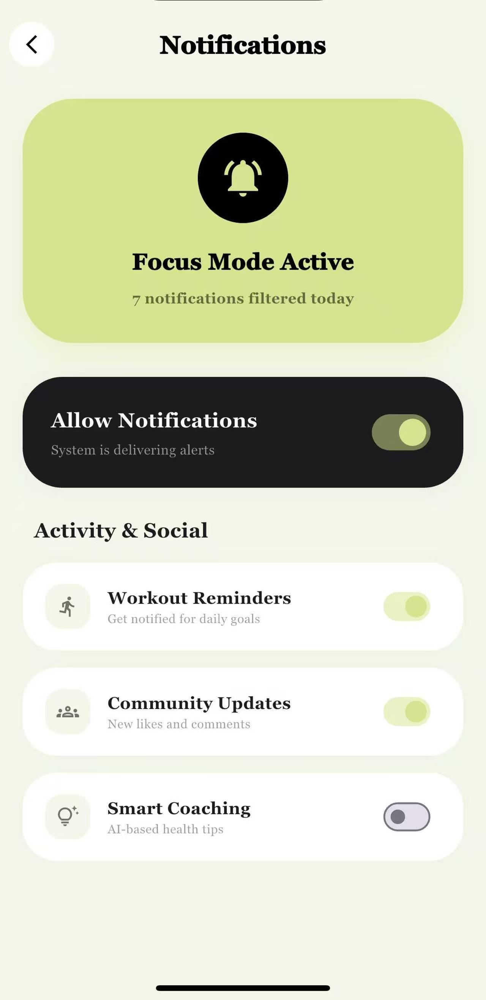
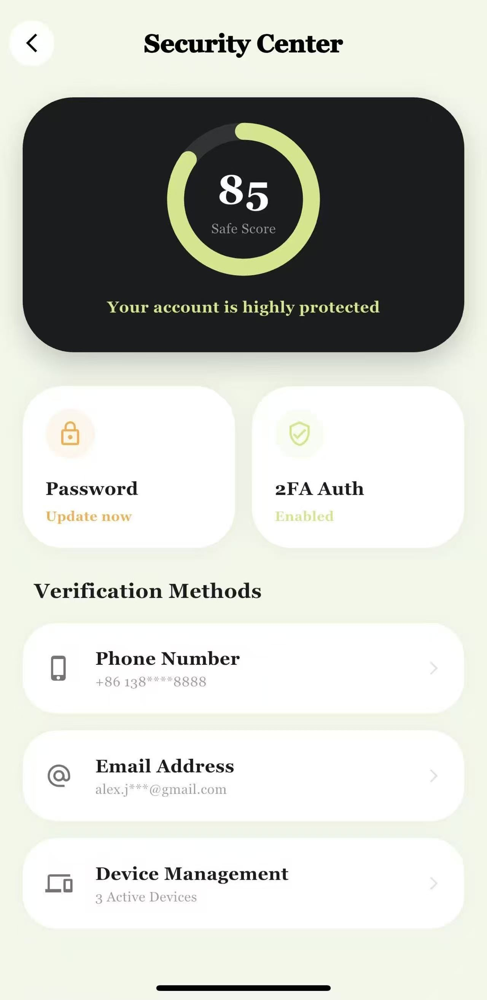
User Profile
The Profile module provides account information, personal statistics, settings, language switching, premium membership options, security controls, support pages, and additional profile-related features. Together, these screens extend the system beyond task completion and reward feedback, giving users a stronger sense of account ownership, personalization, and long-term engagement.
Evaluation Plan
This section outlines how the current prototype and demo will be evaluated.
Evaluation Method
[Placeholder for heuristic evaluation / peer testing / interview / questionnaire plan]
Evaluation Tasks
[Placeholder for tasks users will complete during testing]
Participants
[Placeholder for who will test the prototype]
Measures / Questions
[Placeholder for what you will observe or ask]
Early Testing Notes
Initial Feedback and Issues
- [Placeholder for observed issue 1]
- [Placeholder for observed issue 2]
- [Placeholder for observed issue 3]
- [Placeholder for planned design improvement]
Accessibility & Inclusiveness
This section explains how the system considers usability, accessibility, and beginner-friendly design.
Accessibility Consideration 1
[Placeholder]
Accessibility Consideration 2
[Placeholder]
Inclusiveness Consideration
[Placeholder]
Ethics Note
Research Ethics and Data Collection
[Placeholder for questionnaire ethics / anonymity / consent / module ethics guidance note]
Next Steps
Planned Progress
- Finalize academic references and complete the literature review section.
- Refine and export the final journey map for the portfolio.
- Translate journey findings into concrete interface flows and screen requirements.
- Create low-fidelity and medium-fidelity prototype screens in Figma.
- Test the daily quest flow with peers and document design decisions in the portfolio.
Risks & Next Iteration
This section records current limitations and the next iteration priorities after Week 8.
Current Risks
[Placeholder for technical / design / usability risks]
Next Iteration Priorities
[Placeholder for what will be improved next]
References
The following references support the literature review section and provide evidence for our design decisions regarding gamification, habit building, self-monitoring, and engagement.
- Mazeas, A., Duclos, M., Pereira, B., & Chalabaev, A. (2022). Evaluating the effectiveness of gamification on physical activity: Systematic review and meta-analysis of randomized controlled trials. Journal of Medical Internet Research, 24(1), e26779. https://doi.org/10.2196/26779
- Lally, P., van Jaarsveld, C. H. M., Potts, H. W. W., & Wardle, J. (2010). How are habits formed: Modelling habit formation in the real world. European Journal of Social Psychology, 40(6), 998–1009. https://doi.org/10.1002/ejsp.674
- Page, E. J., Massey, A. S., Prado-Romero, P. N., & Albadawi, S. (2020). The use of self-monitoring and technology to increase physical activity: A review of the literature. Perspectives on Behavior Science, 43(3), 501–514. https://doi.org/10.1007/s40614-020-00260-0
- Peng, B., Ng, J. Y. Y., & Ha, A. S. (2023). Barriers and facilitators to physical activity for young adult women: A systematic review and thematic synthesis of qualitative literature. International Journal of Behavioral Nutrition and Physical Activity, 20, 14. https://doi.org/10.1186/s12966-023-01411-7
- Milne-Ives, M., Homer, S. R., Andrade, J., & Meinert, E. (2023). Potential associations between behavior change techniques and engagement with mobile health apps: A systematic review. Frontiers in Psychology, 14, 1227443. https://doi.org/10.3389/fpsyg.2023.1227443
Team Log
Our team integrates UX research, interface design, and system development to create a scalable and user-centred fitness experience.

Ye Li
Leads user research through questionnaires and data analysis. Identifies key user needs, pain points, and behavioural patterns to inform design decisions and feature prioritisation.

Tingxian Ren
Responsible for implementing the portfolio website and frontend structure. Focuses on responsive layout, visual consistency, and interaction details to ensure a smooth user experience.

Yi Cao
Designs the visual style and user interface of PandaFit. Focuses on usability, visual hierarchy, and consistency across the system, including journey mapping and prototype design.

Popo Liu
Responsible for backend system planning and architecture design. Will implement core logic such as user data management, progress tracking, and reward systems in future development stages.
Contribution Note
Each team member contributes across multiple stages of the design process, from research and ideation to prototyping, implementation, and system planning.
Team Timeline / Work Log
This section records weekly progress, responsibilities, and key development milestones.
Week Log Entry 1
[Placeholder for completed work]
Week Log Entry 2
[Placeholder for completed work]
Week Log Entry 3
[Placeholder for completed work]
Week Log Entry 4
[Placeholder for completed work]